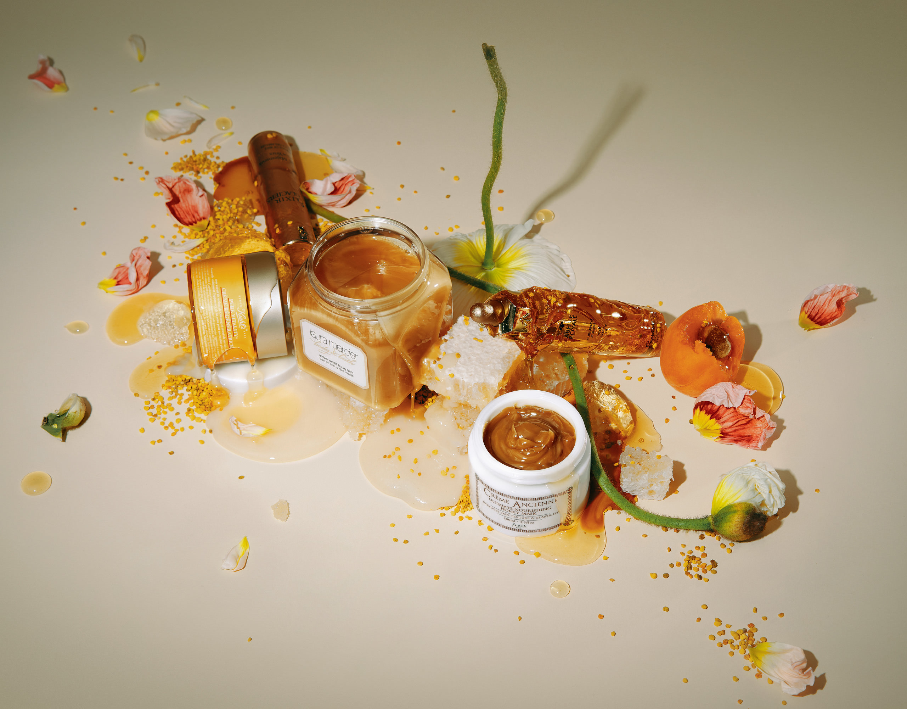

Skin and Body Care
At Bee Well, we only use the finest, ethically sourced bee products. There are several medicinal benefits of honey products for the skin. The natural antibacterial, and anti-inflammatory properties honey possesses will get your skin replenished and feeling great! Ask one of our associates which of our fabulous products is right for you.